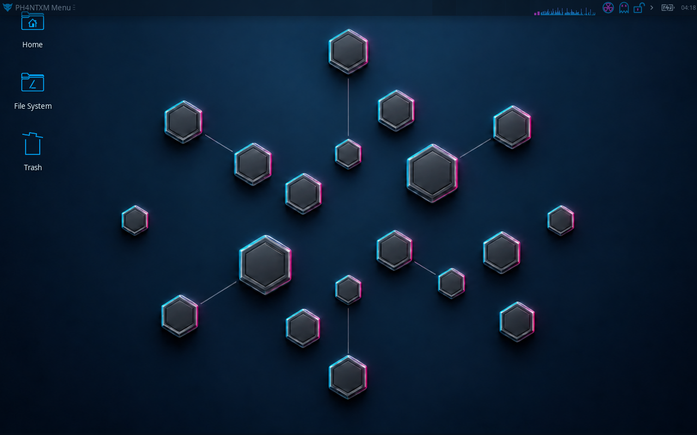

MODE / 01
LINUX
Linux-aligned identity for the system, browser, and network.
- Linux hardware and identity profile
- Encrypted domain name requests
- Protected traffic before it leaves
PH4NTXM is a Linux Live Operating System with an embedded Adaptive Identity Engine. Every session is stateless, disposable, and non-reusable. Instead of changing isolated values, PH4NTXM builds one linked identity that stays consistent during the session.
Explore a protection layer above.
A Linux-aligned identity with Firefox ESR and protected direct connections.
PH4NTXM does not generate every value separately. Each stage reuses values from the previous stages. This keeps the identity consistent across hardware, network, browser, screen, and clock.
Selected at boot and fixed for the session.
Session identity and device details.
System, graphics, memory, and screen profile.
Network identity, packet transformation, and routing.
Browser, time, system checks, and shutdown.
Boot → Identity → Enforcement → Operation → Nuke → Termination
CHAIN LOCKEDYou choose LINUX, WINDOWS, or LONEWOLF from the boot menu. The selected mode stays fixed until the session ends.
Linux-aligned identity for the system, browser, and network.
Windows-aligned identity built from the same linked session values.
Linux-based profile with its own session identity and system-wide Tor routing.
Boot Pilot helps you get started. Health reports system status, while the OpSec Suite provides tools to inspect the session.
System, hardware, browser, network, and clock follow one session profile. Newly connected network adapters receive a protected identity before use.
Linux and Windows combine packet transformation, firewall protection, and checks at the network exit to prevent traffic from bypassing protection.
Linux and Windows encrypt domain name requests. Lonewolf sends them only through Tor.
Memory noise, time changes, and generated system values exist only for the active live session.
Check protection, connect to Wi-Fi, and open your browser from Boot Pilot. Health provides a detailed view of the session.
Linux and Windows use Firefox ESR with the session profile. Lonewolf uses an isolated Tor Browser connected through system Tor.
Lockdown cuts network access. Panic and armed USB storage removal end the session through the same Nuke sequence as normal shutdown.
Network access waits for the selected mode’s required protection checks. Your browser opens from Boot Pilot only after readiness is checked again.

Shutdown, restart, halt, Panic, and armed USB removal all use the same path. The system blocks networking, ends the live session, disables swap, scrubs available RAM, and transfers control to the clean Nuke kernel.
Block links and radios. End the session. Disable swap.
Overwrite the RAM available to the main system.
Transfer control to a clean Nuke kernel kept ready in memory.
Overwrite memory with multiple patterns, make the final available wipe, and power off.
PH4NTXM reduces session-linking signals and blocks accidental network fallback. It cannot protect a compromised machine, compromised firmware, operator mistakes, physical side channels, or every forensic method. RAM and file overwrite remain best effort.
PH4NTXM is open-source under GNU GPL v3. Build your own ISO on Debian 13, then boot from USB directly on your computer. Audits, tests, and patches are welcome.